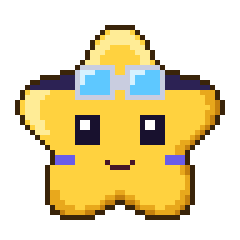

Para PokeIdle · Windows 10 e 11
O piloto das suas contas do PokeIdle. Ele trabalha no horário. Você decide o que importa.
Até 4 contas lado a lado, caçando mesmo com a janela minimizada. A cada 20 segundos ele confere se o time caiu; de hora em hora anota os preços do Mercado; à meia-noite resgata o Passe. Comprar e vender, só com o seu ok.
7 dias com tudo liberado, sem cartão. Depois, grátis para até 4 contas.

Prazer, eu sou o Pilo. Uso só os botões do jogo e paro em 4 contas.- Sem anúncios
- Senhas só no seu PC
- Atualiza sozinho

Um dia do Piloto
O que ele faz enquanto você dorme
Cada automação tem horário ou intervalo fixo, e você liga só as que quiser, conta por conta.
- A CADA 20 SConfere se o time caiu. Se caiu, cura, compra o que faltar e volta para a mesma hunt.
- A CADA 30 SOlha se saiu shiny ou drop raro e avisa no Windows. Grátis.
- A CADA 3 MINProcura no Mercado o item que você quer, até o preço-teto que você marcou. Só com Coins.
- A CADA 30 MINVê se já liberou uma hunt que rende mais XP.
- DE HORA EM HORAAnota o menor preço de cada item do Mercado, em Coins e em Gemas.
- 00:01Resgata o Passe em todas as contas. Grátis.
- 23:55Escreve o resumo do dia de cada conta. Grátis.
A dúvida número 1
Usar programa para abrir 4 contas dá ban?
A resposta está nos Termos do próprio PokeIdle, seção 5. Resumimos aqui; leia o original no site do jogo.
Automação é permitida, no jogo e no Mercado, desde que não explore falhas, não burle os limites do jogo e não sobrecarregue o servidor.
Cada pessoa pode ter até 4 contas. Mais que isso leva a banimento de todas.
Negociar só pelo Mercado da Comunidade. Venda por fora é proibida.
Resumo dos Termos do PokeIdle, seção 5, lidos em 15/11/2026. Se os Termos mudarem, o app muda junto.
O que o Piloto nunca faz
- Usa só os botões do próprio jogo, no ritmo de uma pessoa: no mínimo 1,5 s entre uma ação e outra.
- Para em 4 contas e avisa se você passar do limite da sua internet.
- Pausa a conta por 2 minutos sempre que você clica nela.
- Nunca contorna captcha, nunca saca Gemas, nunca negocia fora do Mercado.
- Compra e venda chegam como pedido para você aprovar.
Por que usar
Jogar com várias contas no navegador dá trabalho demais
Quem tem mais de uma conta conhece a rotina. O Multi Idle foi feito para acabar com ela.
No navegador
- A aba minimizada desacelera e a conta para de render.
- O time cai de madrugada e a conta passa a noite parada.
- Um dia sem resgatar o Passe e a trilha volta ao Dia 1.
- Login caindo, janela anônima, perfil trocado: toda hora refazendo.
- Você não sabe quanto cada conta rende nem o que caiu de raro.
No Multi Idle
- Todas as contas na velocidade cheia, mesmo com a janela escondida.
- O Piloto cura a equipe, repõe poções e volta para a mesma hunt.
- O Passe é resgatado logo depois da meia-noite, em todas as contas.
- Cada conta tem o próprio login guardado, separado das outras.
- XP por hora, drops raros e um resumo do dia para cada conta.
Recursos
Um app feito só para isso
Contas lado a lado
Grade, uma conta principal com as outras ao lado, foco numa só ou um painel com o resumo de todas. Cada conta no próprio espaço.
Nunca dorme
Minimizado, atrás de outra janela ou na bandeja do Windows, as contas continuam caçando na mesma velocidade.
Página de cada conta
Gráficos de 7 dias de XP, Coins e abates, previsão de quando a conta chega ao próximo nível-chave, drops raros e o resumo do dia.
Cofre de logins
Se a sessão cair, o app preenche a tela de login. A senha fica criptografada pelo Windows no seu PC e nunca vai para a internet.
Lives da Twitch e da Kick
Cada conta assiste às lives oficiais com o próprio login para juntar pontos do canal. As lives rodam separadas, sem pesar nas contas.
Jogou no celular? Ele volta
Quando aparece "Conta aberta em outro lugar", o app confere a cada minuto e retoma a conta no PC assim que você sai do celular.
Extensões do Chrome
Instale extensões como a /hunt e escolha em quais contas cada uma roda.
Leve no PC
Contas fora da tela gastam menos placa de vídeo. A conta que passar do limite de memória é reaberta sozinha, na hora em que está parada.
Sua configuração em qualquer PC
Entre com e-mail, Google ou Discord e as contas, os grupos e os ajustes vêm junto. Copie as automações de uma conta para as outras num clique.
O Piloto
Ele cuida da rotina e pergunta antes de mexer no seu bolso
O Piloto lê a tela do jogo e aperta os botões certos: resgata o Passe, repõe poções, troca de hunt, volta depois que o time cai. Você liga cada automação conta por conta. O que envolve comprar ou vender chega como um pedido para você aprovar.
Primeiro, ele só mostra o que faria
No começo o Piloto não toca no jogo. Ele escreve no Histórico cada ação que tomaria, e você confere com calma.
Depois, ele age de verdade
Ligue quando estiver confiante. O painel lateral mostra cada conta, quanto rende por hora e o que já foi feito hoje.
Ele nunca disputa o mouse
Clicou dentro de uma conta? O Piloto pausa nela por 2 minutos e espera você terminar.

Segurança
Você no controle, o tempo todo
Automação boa é a que você consegue conferir, limitar e desligar.
O que o Multi Idle não faz
- Não promete dinheiro. Ele faz suas contas renderem mais e mostra o que vale vender. Quanto cai e por quanto vende depende do jogo.
- Não fura o limite do jogo. O PokeIdle aceita 4 contas por internet, e o app avisa quando você passa disso.
- Não vende por fora. Tudo passa pelo Mercado da Comunidade, dentro do jogo.
- Não roda com o PC desligado. O jogo caça enquanto a página está aberta.
Transparência
- Versão atual
- 1.4.56 · todas as versões
- Publicada em
- 15 de novembro de 2026
- SHA-256 do instalador
5c21556a01fb3b78f6e0a041ad0af25fab3b2417644bd40495cc2f56fd9bcc24- Fica só no seu PC
- Logins e senhas do cofre (criptografados pelo Windows), cookies das contas, histórico do Piloto.
- Vai para o servidor
- Sua conta Multi Idle, o plano, a configuração sincronizada entre PCs e um sinal de uso a cada 5 minutos.
- Aviso do Windows
- O instalador ainda não tem assinatura paga, então o Windows mostra "O Windows protegeu o computador". Confira o SHA-256 acima, clique em Mais informações e em Executar assim mesmo.
Como começar
Em cinco minutos suas contas estão caçando
Baixe e instale
Abra o instalador. Se o Windows mostrar "O Windows protegeu o computador", clique em Mais informações e em Executar assim mesmo. O app abre sozinho no fim.
Adicione suas contas
Aperte Ctrl+N, escolha o PokeIdle e entre com o login da conta. Repita para as outras.
Ligue o Piloto
Abra o Piloto, ligue as automações que quiser e deixe no Ensaio por um tempo. Conferiu o Histórico? Ligue de verdade.
Preços
Grátis para as suas 4 contas. Pro para o Piloto completo
Sem renovação automática: o Pro vale pelo período que você pagou e nada é cobrado depois.
Gratuito
Começa com 7 dias de Pro completo. Depois fica assim, sem prazo.
- Até 4 contas ligadas
- 6 automações do Piloto
- Cofre, página da conta e avisos
- Sincronização entre PCs
Pro mensal
Para conhecer o Pro sem compromisso.
- Tudo do gratuito
- As 25 automações do Piloto
- Lives e extensões
Pro anual
Sai por R$ 4,16 por mês, 40% a menos que pagar mês a mês.
- Tudo do Pro mensal
- Um pagamento só no ano
Fundador: pagamento único
Só para os 100 primeiros. Paga uma vez e usa enquanto o Multi Idle existir, com todas as atualizações.
- Tudo do Pro, sem prazo
- Sem mensalidade
Como comprar e começar
Compre aqui ou no app
Clique em Comprar, entre ou crie sua conta Multi Idle e pague por Pix ou cartão no Mercado Pago. Se preferir, compre depois em "Meu plano", dentro do app.
Baixe o app
Instale o Multi Idle no Windows 10 ou 11. Se o Windows avisar, clique em Mais informações e em Executar assim mesmo.
Entre com a mesma conta
No app, entre com o mesmo e-mail e senha da compra. O Pro já está na conta, em qualquer PC.
| Recurso | Gratuito | Pro |
|---|---|---|
| Contas cadastradas | Sem limite | Sem limite |
| Contas ligadas ao mesmo tempo | Até 4 | Todas |
| Cofre de logins, página da conta e modo leve | Sim | Sim |
| Piloto: Passe, avisos, rendimento, resumo do dia, Guerra | Sim | Sim |
| Piloto: estoque, voltar e subir de hunt, Depot, Raid, Showdown | Não | Sim |
| Piloto: Mercado, Vendedor e Pokémon certo | Não | Sim |
| Lives da Twitch e da Kick | Não | Sim |
| Extensões do Chrome (como a /hunt) | Não | Sim |
Dúvidas
Perguntas frequentes
Automatizar é permitido no PokeIdle?
Sim. A seção 5 dos Termos do PokeIdle permite automações, no jogo e no Mercado, desde que não explorem falhas, não burlem limites e não sobrecarreguem o servidor; o próprio jogo divulga uma extensão de automação no Discord oficial. Veja o resumo na seção Dá ban?. Se os Termos mudarem, o app muda junto.
Dá para ganhar dinheiro com o Mercado (RMT)?
Não conte com isso. O PokeIdle deixa vender itens por Gemas e sacar pelo próprio jogo, mas o que medimos foi cerca de US$ 0,05 por dia com 4 contas caçando Coins, e alguns centavos com drops raros na Outland. O Multi Idle serve para jogar melhor: economiza tempo, sobe XP, organiza as contas e mostra o que cada item vale. O saque é sempre feito por você. Veja como funciona o Mercado.
Como o Multi Idle ganha dinheiro?
Só com o Pro. O grátis não tem anúncio nem coleta de dados para vender. O Pro paga o desenvolvimento e a manutenção, e libera as outras 19 automações, as que dão mais trabalho para manter.
Quantas contas posso abrir?
Até 4, no grátis e no Pro. É o limite do próprio PokeIdle: 4 contas por pessoa e por internet. O app avisa quando você passa disso.
O PC precisa ficar ligado?
Precisa. O PokeIdle caça enquanto a página estiver aberta. O Multi Idle garante que as contas não parem com a janela minimizada ou escondida. Ao fechar no X, escolha "Continuar rodando em segundo plano".
O Piloto pode estragar minhas contas?
Ele começa no Ensaio, sem tocar em nada, e só age depois que você liga. Vender e oferendar pokémon usa os botões oficiais do jogo, que protegem shiny, P5, a Coleção e a equipe. Compras e anúncios no Mercado pedem a sua aprovação, e você pode pausar tudo a qualquer momento.
Minhas senhas ficam seguras?
As senhas do cofre ficam criptografadas pelo próprio Windows, só no seu PC. Elas não vão para a nuvem. O app preenche a tela de login, mas nunca clica em entrar sozinho.
Como pago? Tem Pix?
Tem. Aqui no site, clique em Comprar no plano, entre ou crie sua conta Multi Idle e pague no Mercado Pago, por Pix (já vem selecionado) ou cartão de crédito. Também dá para comprar dentro do app, em "Meu plano". Não guardamos dados de cartão.
Comprei no site. Como o Pro chega no app?
O Pro fica na sua conta Multi Idle, não no computador. Quando o Mercado Pago aprova o pagamento (no Pix, em segundos), ele é liberado sozinho. Baixe o app, entre com o mesmo e-mail e senha da compra e pronto. Já estava com o app aberto? Ele confere o plano a cada 30 minutos; para ver na hora, saia e entre de novo na conta.
O Pro renova sozinho?
Não. O mensal e o anual valem pelo período pago e acabam sem cobrança automática. O app avisa 7, 3 e 1 dia antes de acabar. Se renovar antes do fim, o tempo novo soma ao que ainda falta.
E se eu me arrepender da compra?
Peça o reembolso em até 7 dias depois de pagar, sem precisar explicar o motivo, pelo Fale comigo, com o e-mail da sua conta. O valor volta inteiro pelo mesmo meio de pagamento e o Pro daquela compra é retirado. Os detalhes estão nos Termos de uso.
O PokeIdle pode acabar?
Pode. É um jogo feito por fãs e pode mudar ou sair do ar a qualquer momento, sem depender da gente. Por isso o Pro é vendido por período, sem renovação automática, e o reembolso em 7 dias vale para qualquer compra.
E se o Multi Idle parar?
O app instalado continua funcionando no seu PC, com o plano que ele já tinha, mas sem atualizações. A sincronização entre PCs para, e se o PokeIdle mudar, as automações que quebrarem não vão ser consertadas.
Por que o Windows avisa que o app pode ser perigoso?
O SmartScreen avisa sobre programas novos que ainda não têm assinatura digital paga. Clique em "Mais informações" e em "Executar assim mesmo". As atualizações seguintes chegam sozinhas, sem esse passo.
Pesa muito no computador?
Cada conta usa de 200 a 300 MB de memória no começo e cresce com as horas. O app reabre sozinho a conta que passar do limite. Com 4 contas e 4 lives juntas, PCs mais simples podem sentir: nesse caso, ligue menos lives.
Funciona no celular ou no Mac?
Por enquanto só no Windows 10 e 11. O jogo continua funcionando no celular: quando você sai dele, o Multi Idle retoma a conta no PC.
Ainda não jogo PokeIdle. Por onde começo?
Instale o Multi Idle, aperte Ctrl+N e escolha "Criar conta nova no PokeIdle". O jogo é gratuito e roda no navegador.
Para consulta
Como funciona o Mercado (RMT) do PokeIdle
O PokeIdle deixa vender itens por Gemas e sacar as Gemas pelo próprio jogo. Aqui está como isso funciona de verdade, com números que medimos em 14 e 15/11/2026. Spoiler: dá centavos, não salário.
Coins
Caem caçando, o tempo todo. Compram poções, pokémon e itens no Mercado. Não saem do jogo.
NÃO SACÁVELGemas (vermelhas)
Compradas no jogo a cerca de US$ 0,01 cada e sacáveis pelo próprio jogo a cerca de US$ 0,009 cada. É a moeda que vende e compra itens raros.
SACÁVEL NO JOGODiamantes (azuis)
Moeda de uso dentro do jogo. Não pode ser sacada nem vira Gemas no saque.
NÃO SACÁVELO caminho de um item até virar Gemas
Cada passo tem dono. O app ajuda a enxergar e a decidir; vender e sacar são decisões suas.
- JOGOCaçarNa Outland, treinador nível 150+.
- JOGODrop raroToken ~1 em 2 mil abates; fragmento ~1 em 200 mil.
- APPMochilaO app lê e mostra quanto vale cada item.
- VOCÊAnúncioO Vendedor propõe o preço; você aprova cada um.
- JOGOComissão15% arredondado para cima, por anúncio.
- JOGOGemasO que sobra cai na sua conta do jogo.
- VOCÊSaqueFeito por você, no jogo. O app nunca saca.
A comissão é por anúncio: junte antes de anunciar
O jogo cobra 15% de cada anúncio de item e arredonda para cima. Em itens baratos, o arredondamento pesa muito.
1 token por 3 Gemas
33% de comissão: 15% de 3 é 0,45, que vira 1 Gema. Você recebe 2.
3 tokens juntos por 9 Gemas
22% de comissão: 15% de 9 é 1,35, que vira 2 Gemas. Você recebe 7.
Anúncio novo não vai para quem clicar primeiro
Todo anúncio novo fica 2 minutos retido. Quando libera, quem pedir a compra nos primeiros ~3 segundos entra num sorteio do próprio jogo, que escolhe um comprador. Não é leilão: ninguém paga mais por isso, e clicar mais rápido não garante nada.
- Anúncio criadoO vendedor publica.
- 2 min retidoAparece, mas ninguém compra ainda.
- LiberaO botão de comprar acende.
- ~3 sPedidos entram na fila.
- SorteioO jogo escolhe um dos pedidos.
- CompradorUm leva; os outros não pagam nada.
O que vende de verdade
Medido no Mercado da Comunidade em 14 e 15/11/2026. Preço anunciado não é garantia de venda, e os valores mudam toda semana.
| Item | Preço visto | Como anda |
|---|---|---|
| Bronze Boss Token | ~3 Gemas | O mais negociado: cerca de 600 mil vendidos por semana. |
| Fragmento de Chave | ~230 Gemas | Raro e procurado. |
| Fragmento de Shiny Stone | ~89 Gemas | Raro e procurado. |
| Fragmento de MEGA Shiny | ~540 Gemas | O mais caro da lista, e o mais raro. |
| Tickets | varia | Vendem, com preço que muda por evento. |
| Pedras de evolução | 2 Gemas (piso) | Paradas no preço mínimo. Só valem a pena em Coins. |
Câmbio observado: 1 Gema ≈ 4,8 milhões de Coins. Drops raros só caem na Outland (treinador nível 150+): token cerca de 0,05% por abate, fragmentos cerca de 0,0005%.
A conta honesta
Isso é o que medimos, não uma promessa: pode ser menos. O Multi Idle não é para ganhar dinheiro. É para jogar melhor: menos tempo cuidando de conta, mais XP, tudo organizado e a tranquilidade de saber o que cada item vale.
O que o app faz no Mercado (Pro)
- Banco de preços: lê os preços de hora em hora, em Coins e em Gemas.
- O que tenho para vender: mostra quanto vale o que está na Mochila.
- Vendedor: propõe o anúncio já com a comissão na conta. Você aprova cada um.
- Caçador de pechincha: compra até o seu teto em Coins, entra no sorteio da liberação e mostra os sorteios ganhos e perdidos.
- Boletim do Mercado: toda semana, o que subiu e o que caiu.
- Saque: sempre manual, feito por você no jogo.
Fale comigo
Dúvida, problema ou ideia?
A mensagem chega direto para mim e eu respondo no seu e-mail. Tem um jogo idle que permite automação? Conte qual: é assim que os próximos jogos entram no app.
Ligue as contas e deixe a rotina com o Piloto
Baixe, adicione sua primeira conta e veja o Ensaio trabalhando. Os primeiros 7 dias vêm com tudo liberado. Depois é grátis para até 4 contas e você decide se quer o Pro.